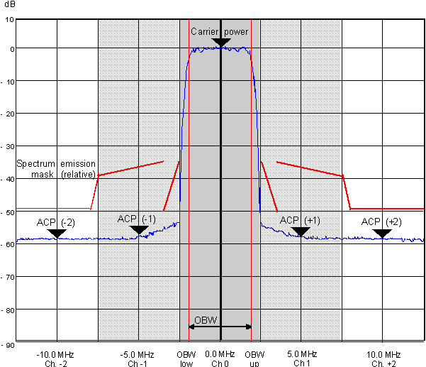

Occupied Bandwidth (OBW)
For wideband and OFDM(A) signals, the occupied bandwidth is the width of a symmetric frequency interval around the nominal RF carrier frequency. It contains 99 % of the total integrated power of the transmitted spectrum. The occupied bandwidth shows whether the signal is confined to the assigned bandwidth of the channel. The following figure shows the occupied bandwidth for a WCDMA signal. The dark shaded area corresponds to the nominal bandwidth of 5 MHz.

Occupied bandwidth (WCDMA/FDD 3.84 MHz)